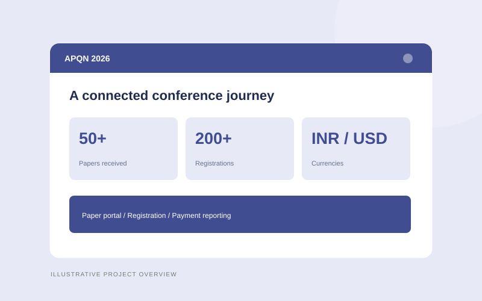

APQN 2026
A conference website and paper portal supporting 50+ paper submissions and 200+ national and international delegate registrations.
(Deemed University)

The purpose
The conference journey connected paper collection and review, delegate registration in INR and USD, participant communication, and payment administration. An administrative dashboard supported cross-checking transactions against BillDesk records.
Built the conference website and paper submission portal. The IT team implemented the BillDesk payment gateway. The transaction dashboard was developed jointly, with approximately equal contributions from me and IT. Prepared reports for management and finance.
How the work comes together.
Submit a paper
Authors provide paper and author details, upload a Word manuscript and photograph, and accept declarations.
Review and notify
Administrators assign reviewers. Released decisions reach the corresponding author by email and through the portal.
Register delegates
Registration categories determine local or international fees, currency and optional excursion charges.
Complete payment
The IT-built BillDesk integration handles payments. Successful payment triggers a confirmation email with the receipt.
Cross-check transactions
The jointly developed dashboard lets administrators filter transaction records and retrieve BillDesk status.
Follow up and report
Active means an incomplete payment journey. The team follows up with payment links and verifies completion; reports support management and finance.
What this supports
50+ papers received and 200+ national and international registrations. Successful payments were confirmed by email with an attached receipt.
See the workflow.
Illustrated demonstration with narration and English captions. Confidential records are excluded; any sample data is fictional.
Read the walkthrough transcript
APQN 2026: from submissions to registrations
For APQN 2026 at Symbiosis International University, Sarthak Gore built the conference website and paper submission portal. The conference received more than fifty papers and more than two hundred registrations from national and international participants. The digital workflow covered paper collection, review, delegate registration, and payment reporting. Some submitted papers were selected; no acceptance rate is claimed.
My contribution and team collaboration
My individual contribution was the conference website and paper submission portal. The IT team implemented the BillDesk payment gateway. The transaction dashboard was a joint effort, with approximately equal contributions from me and IT. I also prepared transaction reports and dashboards for management and finance. This case study credits the payment integration to IT and the dashboard to our collaboration.
Structured paper submissions
The paper portal guides authors through paper details, author information, corresponding-author consent, co-authors, file uploads, and declarations. The demonstrated entry screen uses an emailed access code. Abstracts are limited to two hundred words, and Word manuscripts to ten megabytes. On submission, the system creates a paper identifier, stores structured records in Google Sheets and documents in Google Drive, and emails an acknowledgement to the corresponding author.
Paper review and version history
Administrators assign submitted papers to reviewers. Reviewers download their assigned papers and record acceptance or rejection, with an optional author message. In the reviewed source, reviewer decisions are released directly and emailed to the corresponding author. Administrators can request revisions before a final decision. When a revision is requested, a new document version can be uploaded while previous files are retained. Authors can track their status and released feedback.
Registration for different delegate groups
The general registration form collects national and international delegate details. Payment categories distinguish APQN members from non-members, and local from international delegates. The form applies early-bird or regular prices and selects Indian rupees or US dollars accordingly. Participants may add a half-day excursion. A separate form serves the SIU community, including staff, faculty, and students, with employee or student identifiers.
Payment and participant confirmation
After registration, participants review the fee summary and proceed to BillDesk. The IT team implemented the gateway integration for the payment journey. Following a successful payment, the participant receives an email confirmation with the payment receipt attached. The shared administrative dashboard links registration information with payment records so the team can check transaction outcomes and support enquiries.
Transaction monitoring and cross-checks
The transaction dashboard was jointly developed by Sarthak and the IT team. It shows successful, failed, and active transactions, with filters and a facility to retrieve the latest BillDesk status. The team uses it to cross-check saved records against the BillDesk dashboard. Every number and record shown here is fictional demonstration data. No confidential participant or transaction details are reproduced.
Follow-ups and financial reporting
Active transactions represent payment journeys that participants left incomplete. The team follows up and shares the payment link. Once the participant completes payment, the successful outcome is verified against BillDesk. Registration reports connect participant details with payment status, while the staff report offers CSV, Excel, and PDF exports. These records supported the financial reports prepared for management and finance. All confidential dashboard examples in this walkthrough use dummy data.
Take a closer look.
6-page case study · PDF